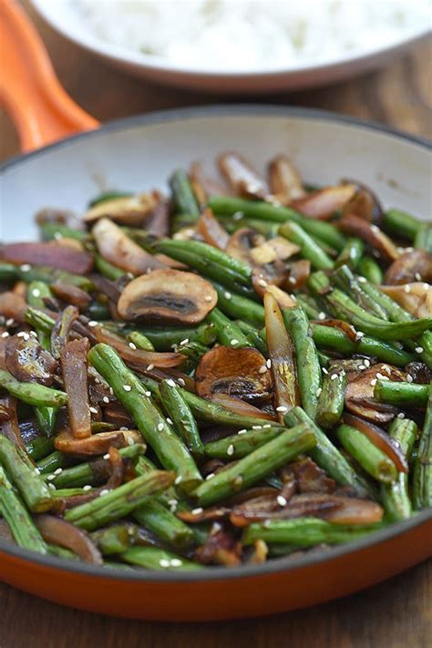

Quick and Easy Green Bean Recipe

Easy, healthy, crunchy and delicious stir-fried green beans. Great as a small side or paired with a feature dish.
Easy to put together in 10-15 minutes depending on the amount you need to cook up, and simple enough to cook
side-by-side other dishes.
Ingredients:
- Green Beans
- Chopped Onion
- Sliced Mushrooms
- 1 1/2 tablespoons minced garlic
- Salt and Pepper to taste
- 2 tablespoons Olive Oil
Steps:
- Add oilive oil to fry pan, either spreading intiially or as adding ingredients
- Wash and chop green beans to desired length and amount and add to fry pan
- Chop onion to desired amount in correspondence to green beans and add to fry pan
- Turn fry pan to medium heat
- Slice mushrooms and add to pan on top of beans and onions
- Stir vegetables occassionally after pan reaches desired heat
- Add in minced garlic and stir
- Add in salt and pepper and stir
- Once onions start to turn clear around the edges turn of heat and continue to stir for 1-2 minutes, then serve
Return to Home Page